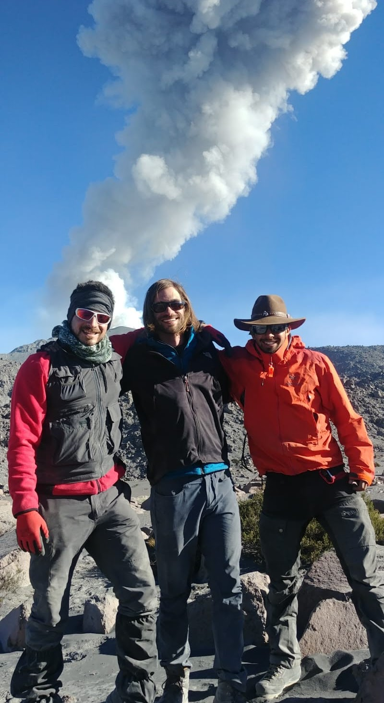
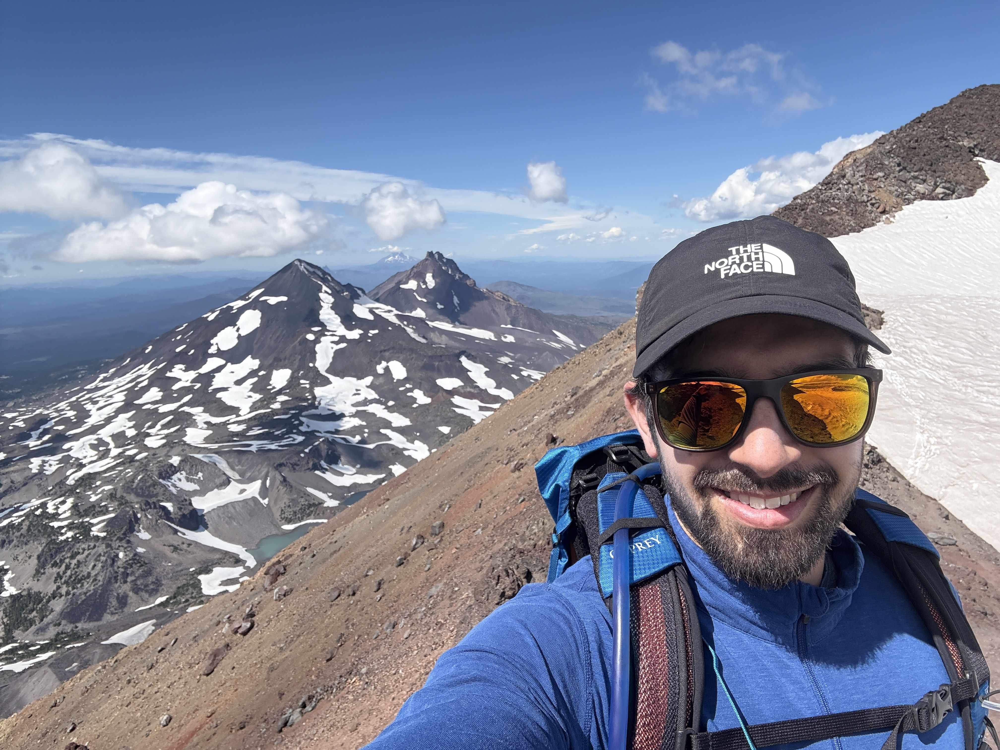

Who am I & what inspires me?
"We are the first generation to feel the effect of climate change and the last generation who can do something about it."
— Barack Obama, 2014
The mountains and the city
I have a general interest in all things earth science and fluid mechanics. In addition to volcanoes, my research areas include glaciers, landslides, wildfires and planetary science. My passion for earth science stems from my love of the outdoors — I'm an avid snowboarder, mountain biker, rock climber, and amateur mountaineer.
My love for the mountains began as a kid wandering the Berkshire mountains in western Massachusetts, where I spent my summers with my parents. When I headed off to university, I began wandering and falling in love with the beautiful mountain ranges of the Pacific Northwest. However, my upbringing in the concrete jungles of Northeast New Jersey has never left me — so when I can't escape to the mountains, I enjoy exploring the diverse cultures of the city, concerts, basketball, indoor rock climbing, frisbee golf, cooking, and hanging out with friends and colleagues after a long day of work.


Why earth science?
While these varied interests keep my mind and body stimulated, the constant threat of natural disasters and their response to climate change keeps me focused on a career in the Earth sciences. During high school in Montclair, NJ (Go Mounties!), I realized that climate change would be the defining challenge for my generation and those to follow.
During my undergraduate studies at the University of British Columbia, Vancouver, BC, I became fascinated by the fluid Earth and the catastrophic releases of potential energy governed by fluid dynamics. I switched from Political Science to Geophysics during my undergraduate degree to learn more about natural disasters, the global climate system, and the fundamentals of geophysical fluid dynamics.
My undergraduate and PhD research work introduced me to the volcano-climate puzzle piece. Over geologic time, volcanoes build and modulate our atmosphere. On shorter time scales rare catastrophic eruptions can induce rapid climate shifts, whereas the cumulative effects of small eruptions can influence climate over decades. Consequently, I'm motivated to understand how eruption styles of all sizes influence the responses of Earth's surface, oceans and atmosphere to climate change. Beyond volcanology, I have extensive experience working on and monitoring glaciers and unstable mountain slopes where I have witnessed rapid responses of these icy and rocky masses to climate change and new weather extremes. These observations motivate me to leverage my geophysical fluid dynamics knowledge to study the response of glaciers and landslides to climate change.
Life in Eugene, Oregon
After thoroughly enjoying life and work in Vancouver, BC, I now live in Eugene, OR, where I work at the University of Oregon researching natural disasters. Much of my first summer was spent planning life around an intense wildfire season and talking with locals about the devastating effects on their homes, businesses, and health.
Forecasting wildfire plume evolution and transport in the atmosphere is challenging, but I hope to use my volcanic plume knowledge to improve our understanding of wildfire plume physics.
So what inspires me? The natural world and all the hard-working people living in it. We are conducting the greatest Earth Science experiment ever with anthropogenic climate change and the consequences will be devastating. However, it is also a chance to observe unprecedented events with cutting-edge technology, gain a better understanding of coupled surface- ocean-atmosphere processes, and improve our ability to prepare communities for the rapidly changing climate.
